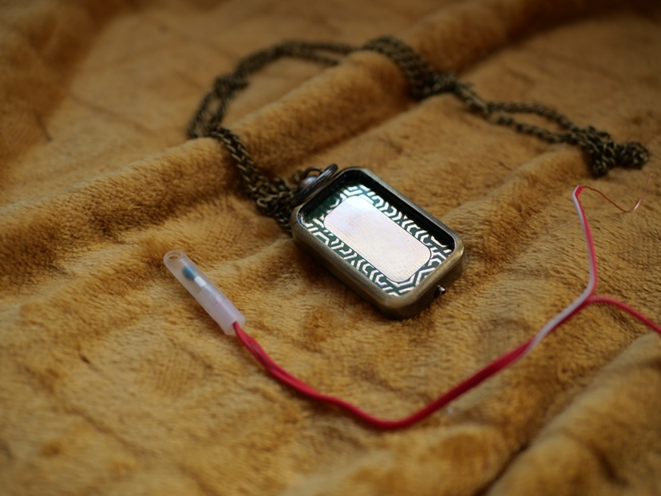
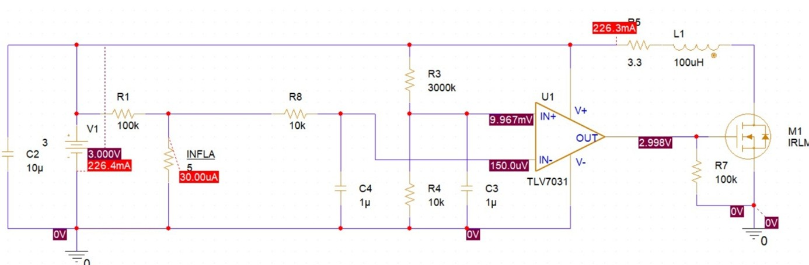
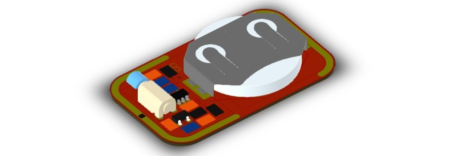
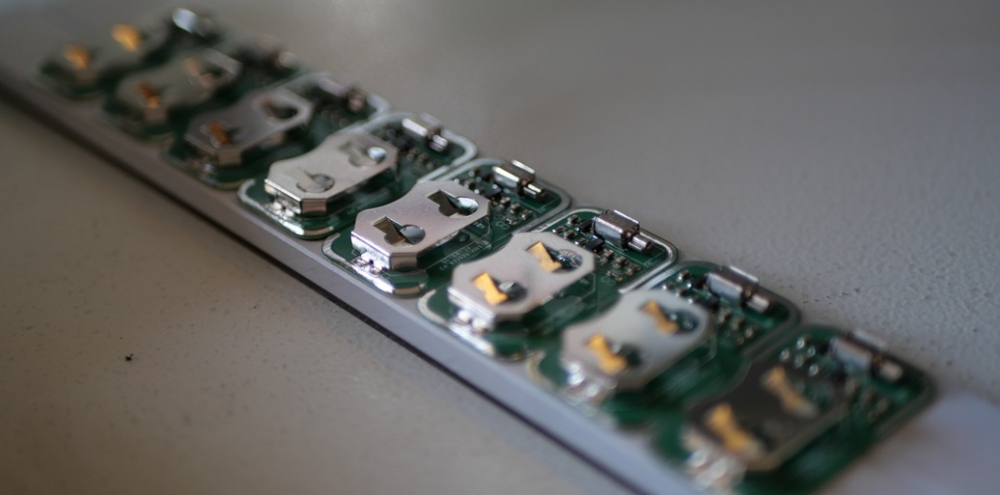

LUXOHM, le testeur d’infla ultra sécurisé

Analyse du besoin
Les inflammateurs pyrotechniques (ou “infla”) sont de petits composants conçus pour déclencher une charge explosive lorsqu’un courant électrique précis les traverse. Ils sont utilisés dans les effets spéciaux, le BTP (tir de mine, démolition contrôlée), ou encore dans des systèmes de sécurité ou militaires.
Avant leur utilisation, il est essentiel de vérifier leur bon état électrique, c’est-à-dire s’assurer que la continuité du circuit est toujours assurée (fil non coupé, oxydation absente, etc.). Cette vérification consiste à envoyer un courant très faible entre les deux bornes de l’infla pour mesurer la présence d’un chemin conducteur.
Or, utiliser un multimètre classique pour cette vérification est dangereux : certains modèles peuvent envoyer un courant bien trop élevé. Selon l’Institute of Makers of Explosives (IME), un infla peut être déclenché à partir de 250 mA, et même 173 mA d’après une étude du U.S. Bureau of Mines.
L’objectif était donc de créer un appareil :
- ultra sûr (courant de test très faible),
- compact et robuste (chocs, humidité),
- simple à utiliser sur le terrain, même avec des EPI,
- à très faible consommation (autonomie de plusieurs années),
- et low-cost, avec un coût de production inférieur à 10 € par unité.
Simulation
Avant toute fabrication, le système a été entièrement simulé sous SPICE afin de garantir un courant de test inférieur à 30 µA, soit plus de 5000 fois inférieur au seuil d’inflammation.
Le circuit a été optimisé pour consommer moins de 5 µA en veille, ce qui permet une autonomie théorique de plus de 5 ans sur une simple pile bouton CR2032 (3 V, 220 mAh).
L’architecture repose sur un comparateur ultra basse consommation, et un fusible de sécurité protège contre toute défaillance.

Prototypage
Le design retenu est compact et robuste, sous la forme d’un médaillon intégrant deux zones de contact destinées au test des inflas. Le capot supérieur, usiné en laiton puis soudé directement sur le PCB, assure une excellente tenue mécanique et une protection renforcée contre les déformations ou les chocs.
Le boîtier final adopte une forme simple, durable et facile à manipuler. Sa géométrie permet une utilisation à une main, même avec des gants, et une excellente résistance en milieu extérieur.
Le retour utilisateur se fait par vibration, un choix volontairement privilégié aux signaux lumineux ou sonores, moins fiables en présence d’EPI ou en conditions extérieures exigeantes.
La carte électronique a été conçue sous EAGLE :

Fabrication
Une première série de 10 unités a été produite afin de valider l’ensemble du processus industriel et de réaliser des essais terrain. Les boîtiers sont usinés par un partenaire spécialisé, assurant une précision mécanique élevée ainsi qu’une excellente résistance aux chocs et contraintes extérieures.
Les circuits imprimés sont fabriqués par un sous-traitant qualifié puis assemblés chez Orbivia grâce à notre machine pick-and-place, garantissant un contrôle complet sur la qualité et la reproductibilité du produit. Cette approche permet également d’optimiser les délais et les coûts de production.
L’électronique finie est ensuite encapsulée dans une résine étanche, offrant une protection durable contre l’humidité, les vibrations et les manipulations répétées en environnement terrain.

Tests & validation
Des mesures électriques ont été réalisées sur plusieurs modèles d’inflas afin de confirmer les résultats obtenus en simulation. Le courant de test mesuré reste systématiquement inférieur à 30 µA, soit une marge de sécurité supérieure à ×5000 par rapport aux seuils d’inflammation rapportés dans la littérature.
Le fonctionnement mécanique et l’ergonomie ont également été évalués en conditions réelles : manipulation avec gants, exposition à l’humidité, vibrations et chocs. Aucun défaut ni déclenchement intempestif n’a été observé.
La prochaine phase consistera en des essais terrain lors d’opérations pyrotechniques (notamment les feux de la Sainte-Barbe), afin de valider la robustesse du produit lors de cycles d’utilisation répétés et de recueillir un retour utilisateur avancé.
Crédit photo : Luxfactory